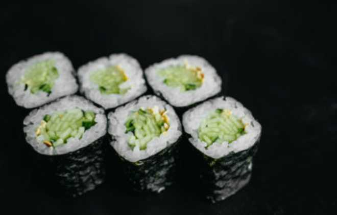
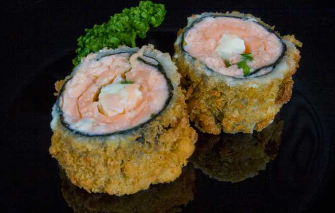

Hassomaki
Hoso = fino. Maki = enrolar. Hossomaki é o sushi enrolado em rolos finos com alga por fora. Por serem pequenos, costumam levar apenas um ingrediente no recheio, podendo variar entre salmão, kani, pepino, etc.
Uramaki
Ura = reverso. Maki = enrolar. Uramaki é o sushi enrolado ao contrário, ou seja, diferente do hossomaki que leva a alga por fora, o ura tem a alga enrolada por dentro e o arroz por fora. Pode levar dois ou mais recheios.
Niguiri
Ni = dois. Giri = dedos. Niguiri é o tradicional sushi feito à mão. Recebe este nome pela porção específica de arroz em forma oval que deve se encaixar em dois dedos do chef para ser pressionado junto ao peixe durante a montagem. Trata-se da peça que mais exige prática para que seja feita da forma correta.
Gunkan
Gunkan = navio de guerra. Favorito da maioria, o gunkan se difere das outras peças por ter o seu recheio no topo, enquanto o arroz aparece no meio enrolado tradicionalmente por alga marinha. Algas e ovas de peixe costumam ser os principais ingredientes do gunkan, mas aqui no Sushi o mais popular é o de salmão com cebolinha e cream cheese. Já experimentou?
Sashimi
Sashi = furado. Mi = carne. Sashimi significa carne perfurada e recebe este nome devido a técnica de pesca utilizada para a sua preparação. Vale lembrar que sashimi é apenas a fatia de peixe cru cortado em finas fatias e, por não incluir arroz em seus ingredientes, não é considerado um tipo de sushi.
Hot Roll
Hot = quente. Roll = rolo. Hot roll é o sushi empanado com alga frita, crocante com farinha panko e recheios variados, sendo o salmão grelhado o mais comum. Apesar da criação brasileira, o hot compõe os mais variados cardápios de restaurantes japoneses. Portanto, podemos dizer que este é um clássico da comida japonesa brasileira. E vamos combinar, é uma delícia, né?